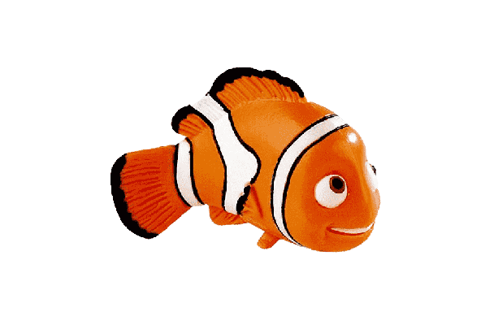

Le Poisson clown
Description
Les poissons-clowns, ou Amphiprioniane, sont une sous-famille
de poissons appartenant à la famille des Pomacentridées. Elle
contient trente escpèces, une seule classée dans le genre
Premnas, les autres faisant partie du genre Amphiprion. Ce sont
des poissons d'une dizaine de centimètre dans les tons
d'orange et de noir. Certaines escpèces présentent des bandes
ou des barres blanches. Ils fréquentent les lagons et les récifs
coralliens de la zone Indo-Pacifique et de la mer Rouge où ils se
nourissent généralement de copépodes et de larves de
tuniciers.
Source - Le poisson clowm